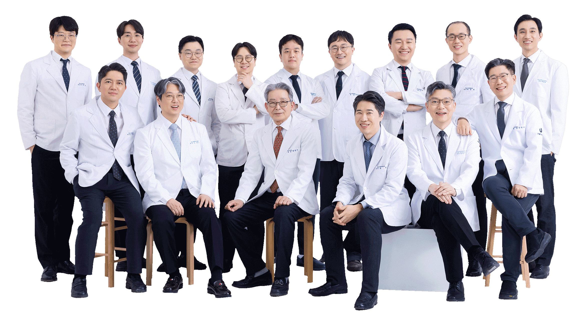
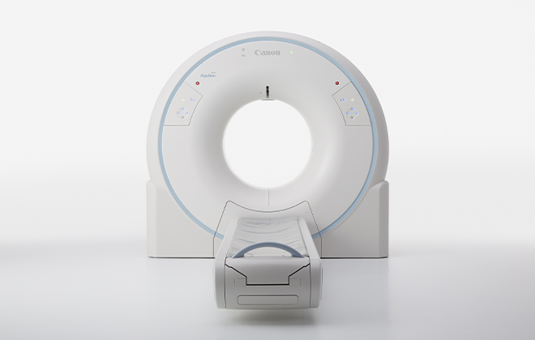
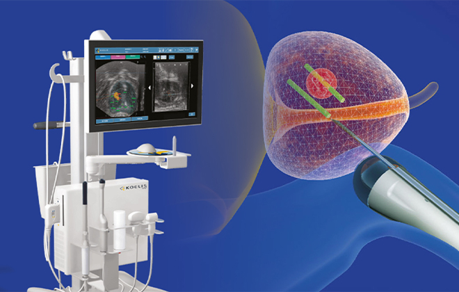
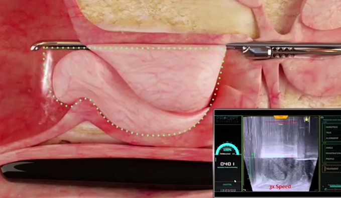
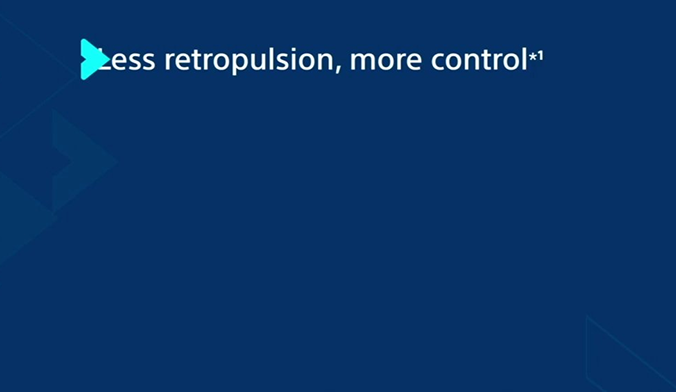
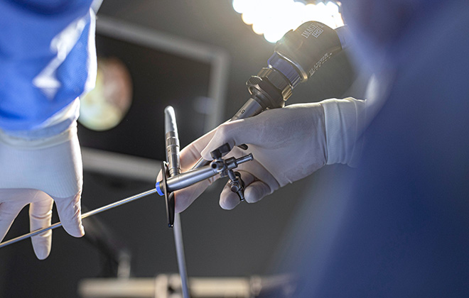
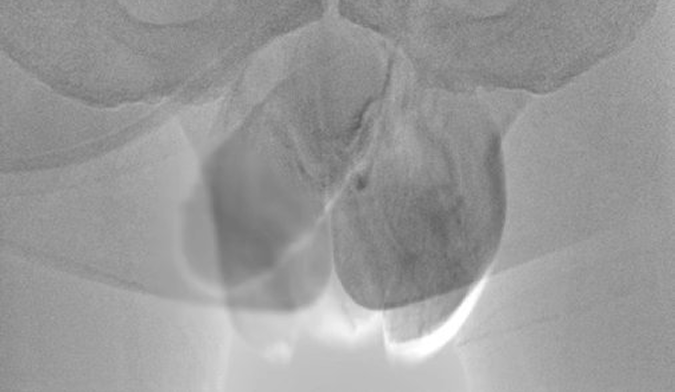

독보적 시술 · 수술 건수
2024년 당해연도 '8,606례' 돌파!
전립선, 남성난임, 요로결석, 남성배뇨장애, 여성비뇨의학분야 기준

다각적 초개인화 맞춤 진료
비수술·수술 특화 센터
Advanced medical systems proride the best service
Scroll
상담, 간단하고 빠르게
비뇨의학 선진을 리드하는 유웰비뇨의학과 전문의료진 16인
극강의 노하우로,
메디컬 하이퀄리티가 되다.유웰비뇨의학과는 표준화, 과학화, 근치적 치료로 유웰비뇨의학과는 표준화, 과학화, 근치적 치료로 비뇨의학의 발전을 선도한다는 목표실현과 최상의 의료환경을 갖추고 비뇨의학의 발전을 선도한다는 목표실현과 최상의 의료환경을 갖추고 전립선, 요로결석, 정계정맥류, 정관복원, 요실금 등 특수 비뇨기 질환까지 전립선, 요로결석, 정계정맥류, 정관복원, 요실금 등 특수 비뇨기 질환까지 의료영역을 확대하며, 비수술 · 수술 초개인화 맞춤 치료를 다각적 접근으로 시행하고 있습니다. 의료영역을 확대하며, 비수술 · 수술 초개인화 맞춤 치료를 다각적 접근으로 시행하고 있습니다.
U·well's Team Of

16 Urology Specialist
비뇨의학 리더가 되기까지
Innovative
Leaders
AI 3T MRI (Magnetic Resonance Imaging)
Philips Ingenia 3.0T
CT(Computed Tomography)
Somatom, Siemens
MRI 융합 표적 조직검사
MRI-fusion biopsy
워터젯 로봇수술
AQUABEAM®, Procept BioRobotics
홀뮴레이저
Pulse 120H, Boston Scientific
고해상도 내시경 시스템
Storz, Olympus, Stryker
정계정맥류 색전술
Embolization
AI 3T MRI (Magnetic Resonance Imaging)
Philips Ingenia 3.0T

CT(Computed Tomography)
Aquilion Start, Canon
고해상도 비뇨기계 암 검진, 요로결석

MRI 융합 표적 조직검사
MRI-fusion biopsy
3D 표적화 전립선암 검진

워터젯 로봇수술
AQUABEAM®, Procept BioRobotics
최소침습 인공지능(AI) 전립선비대증 수술

홀뮴레이저
Pulse 120H, Boston Scientific
고출력 요로결석, 전립선비대증 수술

고해상도 내시경 시스템
Storz, Olympus, Stryker
난치성 요로결석 수술

정계정맥류 색전술
Embolization
난임·남성 통합치료
특화센터는 최신 의료 기술과 임상 데이터를 기반으로 최적화된 환자 중심의 치료를 제공합니다.
질병의 근본 원인을 규명하고, 신뢰할 수 있는 치유 솔루션으로 한 차원 높은 의료 서비스를 경험해 보세요.
U·WELL UROLOGY CLINIC
Urology Summit
비뇨의학의 정점에,
늘 유웰비뇨의학과.
유웰비뇨의학과는 질환에 따른 최소침습, 정상 조직 보존을 핵심으로 유웰비뇨의학과는 질환에 따른 최소침습, 정상 조직 보존을 핵심으로 고령의 환자도 안전한 단계적 비수술 치료법을 제시하며, 고령의 환자도 안전한 단계적 비수술 치료법을 제시하며,
전국 최대 규모의 대학병원급 검사 장비, 임상병리실을 운영하여 전국 최대 규모의 대학병원급 검사 장비, 임상병리실을 운영하여 고도화 된 시스템으로 정밀하고 신속한 검사가 가능합니다. 고도화 된 시스템으로 정밀하고 신속한 검사가 가능합니다.
또한, 신의료기술 도입과 풍부한 임상경험으로 또한, 신의료기술 도입과 풍부한 임상경험으로 메디컬 노하우 증진 및 의료서비스의 사명을 다하고 있으며, 메디컬 노하우 증진 및 의료서비스의 사명을 다하고 있으며, 오늘도 비뇨기계 질환의 치료를 위해 내원하는 환자에게 유웰비뇨의학과는 최선을 다합니다. 오늘도 비뇨기계 질환의 치료를 위해 내원하는 환자에게 유웰비뇨의학과는 최선을 다합니다.
유웰의 역량
숫자와 규모로 입증합니다.
(*2024 당해연도 기준)
유웰의 커리어
더 나은 진료를 향한 책임감.
끊임없는 논문과 학술 활동으로 연구합니다.
U·WELL TV
남녀뇨소,
비뇨의학의 모든 것


유웰소식
View More